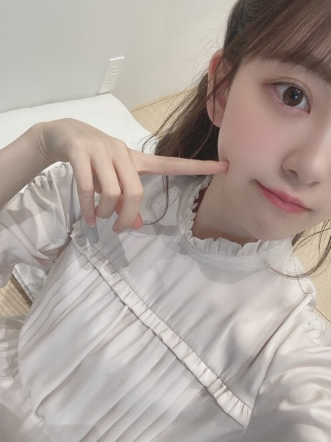
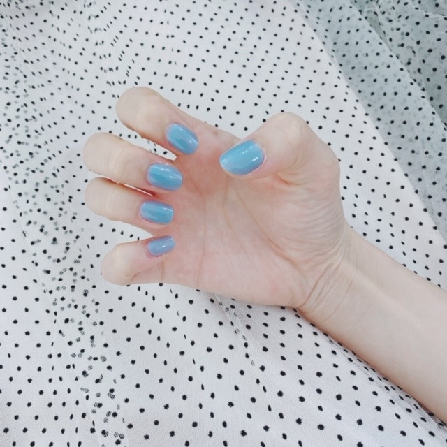
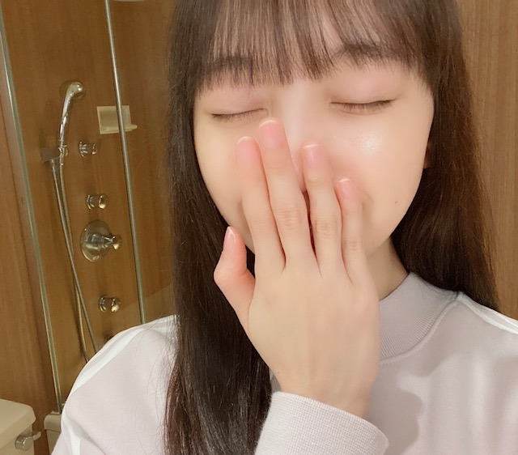
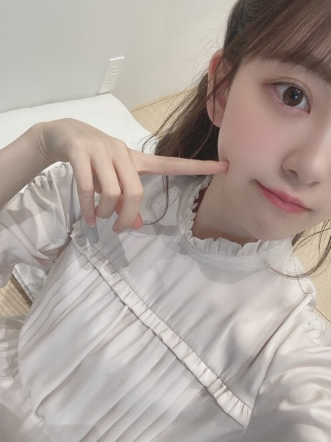
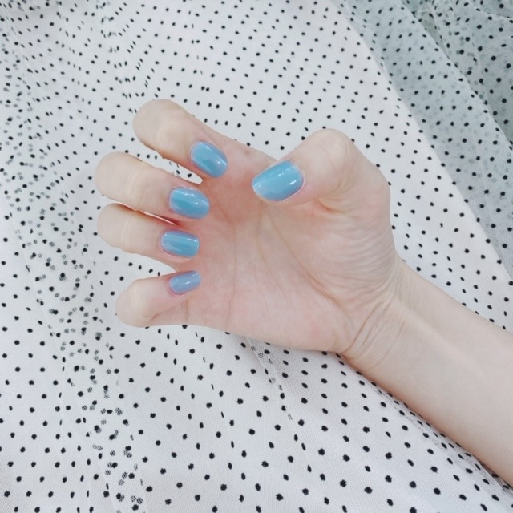
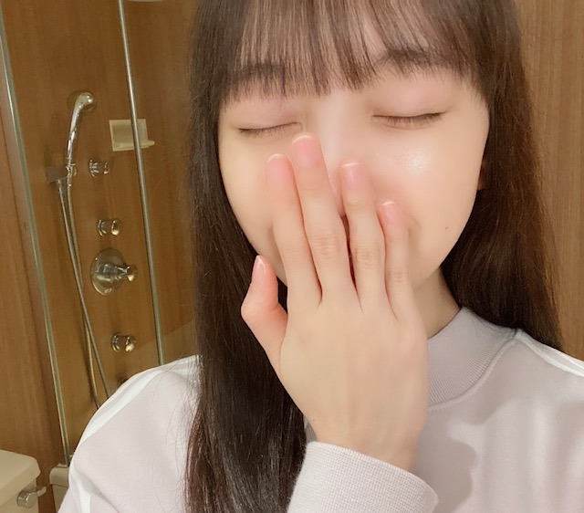

2020/0304Wed水槽越し
昨日と一昨日、
寝る前にロミオとジュリエットを
久しぶりに観ました
最近は寝る前に映画を観るのが好きです☺︎
主演のお二人が美しいことはもちろん
肌質や目の色、全てが見えるような近さのカメラワークや全体のテンポ感も好きだし
ストーリーも、切なさの中にロマンチックで力強い愛があって本当に素敵で何回観てもいいなぁと思います...♩
名作です
好きなシーンはたくさんあるけど
特に水槽越しの一目惚れのシーンと
プールのシーンが大好き

朝、お母さん〜って抱きつきにいったら
軽くあしらわれました。笑 しょぼん。笑
家族とのコミュニケーションは日課です
みんなで映画を観たり歌ったり踊ったり...
17歳くらいからはようやく一人で寝れるようになったけど寝るとき以外はまだまだ家族と一緒にいないと寂しくなる所はちゃんと末っ子だなーと☺︎

ふとね、
何でも素直に思ったこと言ってしまうのだめだなぁっていう話をマネージャーさんにしたら
そこが良いんだよ！飾らない姿が。堀らしさだよ。と言ってくださって、、、嬉しかったお話し。
あ、私は私のままでやってきてよかったなって、
これからも私らしくやっていこうって思えました☺︎
本当に私の周りの方々は素敵な人ばかりで幸せものです
そう思うと1st写真集の「君らしさ」はタイトルからもうお気に入りだなぁ〜
こんな私をいつも応援してくださる皆さんありがとうございます✨

たまには、すっぴん。ゆでたまご。
発売中のarとノンノでスキンケアについて話しています！ぜひ
では☺︎
昨日と一昨日、
寝る前にロミオとジュリエットを
久しぶりに観ました
最近は寝る前に映画を観るのが好きです☺︎
主演のお二人が美しいことはもちろん
肌質や目の色、全てが見えるような近さのカメラワークや全体のテンポ感も好きだし
ストーリーも、切なさの中にロマンチックで力強い愛があって本当に素敵で何回観てもいいなぁと思います...♩
名作です
好きなシーンはたくさんあるけど
特に水槽越しの一目惚れのシーンと
プールのシーンが大好き

朝、お母さん〜って抱きつきにいったら
軽くあしらわれました。笑 しょぼん。笑
家族とのコミュニケーションは日課です
みんなで映画を観たり歌ったり踊ったり...
17歳くらいからはようやく一人で寝れるようになったけど寝るとき以外はまだまだ家族と一緒にいないと寂しくなる所はちゃんと末っ子だなーと☺︎

ふとね、
何でも素直に思ったこと言ってしまうのだめだなぁっていう話をマネージャーさんにしたら
そこが良いんだよ！飾らない姿が。堀らしさだよ。と言ってくださって、、、嬉しかったお話し。
あ、私は私のままでやってきてよかったなって、
これからも私らしくやっていこうって思えました☺︎
本当に私の周りの方々は素敵な人ばかりで幸せものです
そう思うと1st写真集の「君らしさ」はタイトルからもうお気に入りだなぁ〜
こんな私をいつも応援してくださる皆さんありがとうございます✨

たまには、すっぴん。ゆでたまご。
発売中のarとノンノでスキンケアについて話しています！ぜひ
では☺︎
2020/03/04 15:48
コメント(296)
ロミジュリ泣ける話だよね！！最後が切なくて、1回見たらもう見れなくなっちゃった笑笑 堀ちゃんは飾らない姿と自分らしさがあるところは昔から変わっていなくて、そこが大好きなところです！！みおちゃんはそのままでいいし、ありのままが大好きです！！すっぴんも可愛い！！本当に肌綺麗！！arもノンノもみたよ！！保湿と食べ物が大事なのね！！すごく参考になりました！！いつもファッション誌でみおちゃんのページは切り抜いてアルバム作ってる！！可愛さの塊だと思う！大好きです！レコメン楽しみにしてるね！
ももんが
ももんが
すっぴんが綺麗やね！
普段からお肌の手入れに人一倍気を付けてるからかな？
堀ちゃんすごいよ！
普段からお肌の手入れに人一倍気を付けてるからかな？
堀ちゃんすごいよ！
未央奈可愛い 大好き
大好き
こんばんは。
映画鑑賞は欠かせないですね。
自分も週末久しぶりにロミオとジュリエット観ようと思います。
未央奈さんと観てると妄想モードで。
お母さんも照れくさかったのかな？
代わってあげたかったです。
思ったことを言ってしまう、避けたい状況もあるかと思いますが、それはそれで自分も基本良いと思います。
伝えなければ何も生まれませんし、人との関係性も変わらないし。
自分は伝えるのが下手なので、素直に言えるのは素敵だし、羨ましいです。
可愛い写真をありがとうございます。
また幸せのコレクションが増えます。
未央奈さんのファンで良かったと思いますよ。
出会えて良かった。
やっぱり大好きです。
お身体にはお気をつけてくださいね。
頑張って行きましょう！
映画鑑賞は欠かせないですね。
自分も週末久しぶりにロミオとジュリエット観ようと思います。
未央奈さんと観てると妄想モードで。
お母さんも照れくさかったのかな？
代わってあげたかったです。
思ったことを言ってしまう、避けたい状況もあるかと思いますが、それはそれで自分も基本良いと思います。
伝えなければ何も生まれませんし、人との関係性も変わらないし。
自分は伝えるのが下手なので、素直に言えるのは素敵だし、羨ましいです。
可愛い写真をありがとうございます。
また幸せのコレクションが増えます。
未央奈さんのファンで良かったと思いますよ。
出会えて良かった。
やっぱり大好きです。
お身体にはお気をつけてくださいね。
頑張って行きましょう！
堀ちゃんの飾らない姿、大好きです！
これからもずーっと応援してるよ！
レコメン聞くね〜
これからもずーっと応援してるよ！
レコメン聞くね〜
オールナイトニッポン楽しみにしてる！！
すっぴんでも可愛い〜 流石だね！
家族と仲良くて羨ましいな〜 そりゃそんだけ仲良いと寂しくなるよね。
俺は今の未央奈が好きだから、無理に変わらなくてもいいと思うよ。自分らしさって大事だもんね。そのままの未央奈で進んでいってください！
家族と仲良くて羨ましいな〜 そりゃそんだけ仲良いと寂しくなるよね。
俺は今の未央奈が好きだから、無理に変わらなくてもいいと思うよ。自分らしさって大事だもんね。そのままの未央奈で進んでいってください！
ブログ更新ありがと！
突然なんだけど、、、
みおなのお家って、、、お風呂場のひねるところ！蛇口？４つもあるの！？
突然なんだけど、、、
みおなのお家って、、、お風呂場のひねるところ！蛇口？４つもあるの！？
未央奈かわいいー
寝る前の映画は最高だよねー
早く2nd写真集見たいよー
すっぴんまじで可愛すぎ
寝る前の映画は最高だよねー
早く2nd写真集見たいよー
すっぴんまじで可愛すぎ
スッピンでも綺麗だね！
肌も白いし！
またブログ楽しみにしてるね
肌も白いし！
またブログ楽しみにしてるね
お疲れ様です。未央奈ちゃんらしくて、イイね!これからもその調子でいいんじゃない!大好きです!ちなみにすっぴんもイケてるよ!！！かわいい
ゴルゴンゾーラな未央奈が好き。
自然体が一番です！
自然体が一番です！
やほ～♡
ロミジュリとっても感動的です♪
主演も美しいし物語も尊いですよね！
二人の困難が愛を更に育みますよね☆
末っ子気質とっても羨ましいですー！
飾らない姿がとっても魅力的ですよ✨
君らしさは的確なネーミングですよね！
新写真集を待ってる時間も嬉しいです✴
すっぴんは素材の良さが出てますよー！
素材が良いからメイクも映えるのです✌
スキンケアも沢山努力してるのですねー！
自分の生活にも毎日ハリがありますよ～☺️
ロミジュリとっても感動的です♪
主演も美しいし物語も尊いですよね！
二人の困難が愛を更に育みますよね☆
末っ子気質とっても羨ましいですー！
飾らない姿がとっても魅力的ですよ✨
君らしさは的確なネーミングですよね！
新写真集を待ってる時間も嬉しいです✴
すっぴんは素材の良さが出てますよー！
素材が良いからメイクも映えるのです✌
スキンケアも沢山努力してるのですねー！
自分の生活にも毎日ハリがありますよ～☺️
堀ちゃん、ブログ更新ありがとう
飾らない、素直で真っ直ぐな
堀ちゃんが大好きです！
堀ちゃん、堀ちゃんらしく！
そんな堀ちゃんを全力で、
応援し続けます！
堀ちゃんのすっぴん、お美しい！
堀ちゃん、大好きだよー
飾らない、素直で真っ直ぐな
堀ちゃんが大好きです！
堀ちゃん、堀ちゃんらしく！
そんな堀ちゃんを全力で、
応援し続けます！
堀ちゃんのすっぴん、お美しい！
堀ちゃん、大好きだよー
今日のブログ内容特に癒されるし画像可愛いすぎたまらん
どした
ちょっと叫んできます
どした
ちょっと叫んできます
朝、お母さん〜って抱きつきにいったら
軽くあしらわれた家族大好き
堀未央奈さんブログ更新ありがとう
今日はレコメンとANNだね⁉︎
楽しみ〜〜（＾∇＾）
arやノンノチェックするね⁉︎
すっぴん凄いね
美肌やなぁ〜〜
可愛い〜〜^_^
軽くあしらわれた家族大好き
堀未央奈さんブログ更新ありがとう
今日はレコメンとANNだね⁉︎
楽しみ〜〜（＾∇＾）
arやノンノチェックするね⁉︎
すっぴん凄いね
美肌やなぁ〜〜
可愛い〜〜^_^
未央ちゃんブログ更新有り難うございます。すっぴんかわいいです。ほぼ同郷なのを誇りに思います(^-^)/。
未央ちゃん応援してます。
未央ちゃん応援してます。
更新ありがとう。
好きな映画って飽きないですよね。
写真かわいい～
未央奈ちゃんって末っ子なんですね。
お母さんに甘えてるとこかわいいですよ。
そのまんまの飾らない未央奈ちゃんが大好きです
すっぴん写真かわいい～より好きになりました
好きな映画って飽きないですよね。
写真かわいい～
未央奈ちゃんって末っ子なんですね。
お母さんに甘えてるとこかわいいですよ。
そのまんまの飾らない未央奈ちゃんが大好きです
すっぴん写真かわいい～より好きになりました
未央奈ちゃんブログ更新ありがとう！
可愛い！
またコメントします！
可愛い！
またコメントします！
かわいいいああいいいいいいいい❤︎
ロミジュリ、未央奈ちゃんが観るとしたら、レオ様版ですよねー。
でも是非一度、旧版も観て欲しいです！
オリビア･ハッセーのジュリエットの美しさは、神!!ですよ♪☆
でも是非一度、旧版も観て欲しいです！
オリビア･ハッセーのジュリエットの美しさは、神!!ですよ♪☆
みおな！可愛いッス！
映画っていいよね。
見たいけど借りたりできないからなぁ。
家族が好きっていいことだよね、、
すっぴん可愛いのん。
好きでし！
んへ。
映画っていいよね。
見たいけど借りたりできないからなぁ。
家族が好きっていいことだよね、、
すっぴん可愛いのん。
好きでし！
んへ。
こんばんはお疲れさま☺
堀ちゃん映画好きやんね✨
趣味のひとつでも、作品に対する想いも強いみたいやね☺
なんか一緒に観たいですな(笑)☺
お母さんも一緒にね(笑)☺
因みに俺も末っ子やけど、堀ちゃんほど甘えんぼさんちゃうよ～(笑)☺
でも女の子は良いかな☺
末っ子やったら弟や妹ほしくなかった？
俺はそうやったよ✨
あと素直な性格はある意味大事やと思うよ✨
でも、一に相手を思いやる心が更に加わればもっと良いな☺
これは俺の意見やから(笑)☺
気にしないでね☺
ではではまたね✨
体調にはホンマに気をつけてくださいね✨
スッピンたまごも良いやんか☺
綺麗ですよ✨
ほなね、堀ちゃん☺
堀ちゃん映画好きやんね✨
趣味のひとつでも、作品に対する想いも強いみたいやね☺
なんか一緒に観たいですな(笑)☺
お母さんも一緒にね(笑)☺
因みに俺も末っ子やけど、堀ちゃんほど甘えんぼさんちゃうよ～(笑)☺
でも女の子は良いかな☺
末っ子やったら弟や妹ほしくなかった？
俺はそうやったよ✨
あと素直な性格はある意味大事やと思うよ✨
でも、一に相手を思いやる心が更に加わればもっと良いな☺
これは俺の意見やから(笑)☺
気にしないでね☺
ではではまたね✨
体調にはホンマに気をつけてくださいね✨
スッピンたまごも良いやんか☺
綺麗ですよ✨
ほなね、堀ちゃん☺
未央奈～～～～～～～～～～～～。
飾らない未央奈がいいんだよ。マネージャーさん、よくわかって( -_・)?じゃん。
なんっつて、初心者なのに偉そう。メンゴ。
飾らない未央奈がいいんだよ。マネージャーさん、よくわかって( -_・)?じゃん。
なんっつて、初心者なのに偉そう。メンゴ。
チャァオ～～!☆彡
プリンセスみおちゃん❕❤️❤️❤️❤️❤️笑顔
みおちゃんの写メのお手手、手首を下に
写メを90゜に反転させて見たら～～⤴️⤴️
手相のラインが、格好い～～～⤴️⤴️です❕❤️❤️❤️❤️❤️笑顔
曲がり部分のカーブが、綺麗な角度があって格好い～です❕❤️❤️❤️❤️❤️笑顔
上カーブと下カーブが綺麗に相対してて素敵です❕❤️❤️❤️❤️❤️笑顔
初めて見ましたぁ～❕❤️❤️❤️❤️❤️笑顔
でもぉ～～⤴️⤴️
おいらのはつまらないよぉ～！
ただ、真っ直ぐなぁ～１本線だけ！笑笑
両手とも、ひらがなの「て」です❕笑
あと、これが「＊」１つ下にあるのと
あと、これが「#」上に3つ4つあるだけです❕笑
☆おすまし！より☆彡
すっぴんでも、違和感あんまない。むしろ、可愛い
お疲れ様です
すっぴんもかわいい
応援してます！
すっぴんもかわいい
応援してます！
未央奈さん、かわいすぎ！
未央奈ブログ更新ありがとう！
755でもロミオとジュリエットのこと語ってたね。未央奈が映画を語るとすごく面白そうに感じて、見たくなるよ。今度見てみるね。
耳出してる髪型可愛い！ほっぺ触るポーズも可愛い！
未央奈はお母さん好きだね。家族を大事に思えるって素敵なことだと思う。
このブルーのネイルすごく綺麗な色だよね。
マネージャーさんすごく良いこと言うね。僕も素直で飾らない未央奈らしさが好きなんだよ。未央奈らしくいてくれてこちらこそありがとう。
すっぴんめっちゃ可愛い！指も綺麗。未央奈って白くてツルッとしててゆでたまごだよね。ゆでたまご食べたくなる。
では！
755でもロミオとジュリエットのこと語ってたね。未央奈が映画を語るとすごく面白そうに感じて、見たくなるよ。今度見てみるね。
耳出してる髪型可愛い！ほっぺ触るポーズも可愛い！
未央奈はお母さん好きだね。家族を大事に思えるって素敵なことだと思う。
このブルーのネイルすごく綺麗な色だよね。
マネージャーさんすごく良いこと言うね。僕も素直で飾らない未央奈らしさが好きなんだよ。未央奈らしくいてくれてこちらこそありがとう。
すっぴんめっちゃ可愛い！指も綺麗。未央奈って白くてツルッとしててゆでたまごだよね。ゆでたまご食べたくなる。
では！
未央奈ちゃん
すっぴんも可愛いなんて⸜❤︎⸝
自慢の推しです(´˘`＊)
すっぴんも可愛いなんて⸜❤︎⸝
自慢の推しです(´˘`＊)
すき！
ブログ更新ありがとう！
戯曲はあまり見たことは無いんだけど、ロミジュリは、小説で読んだ事しか無いなぁ
未央奈のいい所は飾らないってまさにそうだと思うな！
工事中とか見てても自然な反応で面白い
またねー
戯曲はあまり見たことは無いんだけど、ロミジュリは、小説で読んだ事しか無いなぁ
未央奈のいい所は飾らないってまさにそうだと思うな！
工事中とか見てても自然な反応で面白い
またねー
好き。
ブログ更新ありがとう！すっぴんもいいね！可愛いです！
大好きな未央奈ちゃんお疲れ様です。私も素直な未央奈ちゃんが大好きやおー!今日のレコメンとまいちゅんのオールナイトニッポン堀北コンビゲスト出演しますね!でも、私は今日夜勤なので、生で放送聞けないの、残念!でも、明日は休みなので、You Tubeのアーカイブ配信でゆっくり楽しませていただきますね。未央奈ちゃん出演のdtv放送の4期生とのドラマ凄く楽しみ!
堀ちゃんすっぴんでもかわいい！
レコメンとANN楽しみにしてます！！
レコメンとANN楽しみにしてます！！
かわいい！！
未央奈ちゃんブログ更新ありがとう！
素直に思ったこと言えるところ素敵！！
そういうところ好きです（＾ν＾）
すっぴん可愛いね ^ ^
今日はレコメンとオールナイト日本だね！
ラジオ盛り沢山で嬉しい！絶対に聴く！！
素直に思ったこと言えるところ素敵！！
そういうところ好きです（＾ν＾）
すっぴん可愛いね ^ ^
今日はレコメンとオールナイト日本だね！
ラジオ盛り沢山で嬉しい！絶対に聴く！！
堀未央奈❤こんばんは❗いつも寝る前に映画見て寝るんだね(^-^)v後他の映画も観るの？未央奈は、ホラーの映画好きだよね？観るのかな？素直に全部話す事いい事だよ(^_^)v言いたい事言えばストレス溜まらなくていいと思うよ(^-^)v今日も可愛いね(*^_^*)大好きだよ❤これからも頑張ってね(*^_^*)
かわゆすぎ〜
みおな、こんばんは。更新ありがとう！ 近況報告ありがとうございます。 すっぴんも大好きです！ では、毎日みおなに良いこと沢山ありますように！ おやすみおな！！
あーもう！好きや！
抱きつきに行って軽くあしらわれる所を
想像すると、ほっこりするね(*^^*)
想像すると、ほっこりするね(*^^*)
お疲れ様です、堀さん！
そうですね、僕にはこの日から乃木坂46のファンになったという日があって、2016年8月8日なのですけど、正直、その頃は僕の中での堀さんはよくわからないメンバーの一人、でしたね
そうですね、今でもどれだけわかっているのかわからないのかもしれないですけどね。
そんな僕がそれからこうゆう風に堀さんのブログにコメントしたり、モバメとったり、握手会で堀さんのレーンに並んだり、グッズが欲しくて懸賞に応募するようになるとは、あの頃の僕は想像もしてなかったと思いますね
そうなったのも、飾らない姿に魅了されたのかもしれませんね
とくにバラエティとかで、思ったことを言ってるのは、個人的にかなり楽しいですね（笑）
そうですね、次々にストライクが投げ込まれているような感じですね（笑）
それと、前回のブログに関連することですけど、新しい方程式？別解？を見つけたのですけど、
ニコル=キュート=堀さん
これも正解と考えてもいいのではないでしょうか？
そうですね、また長いコメントになってしまいましたね
またなにかあればコメントします。
健康にはお気をつけてお過ごしください！
そうですね、僕にはこの日から乃木坂46のファンになったという日があって、2016年8月8日なのですけど、正直、その頃は僕の中での堀さんはよくわからないメンバーの一人、でしたね
そうですね、今でもどれだけわかっているのかわからないのかもしれないですけどね。
そんな僕がそれからこうゆう風に堀さんのブログにコメントしたり、モバメとったり、握手会で堀さんのレーンに並んだり、グッズが欲しくて懸賞に応募するようになるとは、あの頃の僕は想像もしてなかったと思いますね
そうなったのも、飾らない姿に魅了されたのかもしれませんね
とくにバラエティとかで、思ったことを言ってるのは、個人的にかなり楽しいですね（笑）
そうですね、次々にストライクが投げ込まれているような感じですね
それと、前回のブログに関連することですけど、新しい方程式？別解？を見つけたのですけど、
ニコル=キュート=堀さん
これも正解と考えてもいいのではないでしょうか？
そうですね、また長いコメントになってしまいましたね
またなにかあればコメントします。
健康にはお気をつけてお過ごしください！
未央奈さん こんばんは！
ロミオとジュリエットの水槽のシーンは、名場面だよね！
あのシーン好き！
未央奈は、未央奈のままでずっといて欲しい。
未央奈らしさでずっと。
いつもエネルギーを貰ってます。
だから、こちらこそ「ありがとうございます！」って気持ちでいっぱいです。
感謝、感謝です！
スッピン写真でエネルギー満タンになったので、残業頑張れます！
未央奈は未央奈のままで、
最高の笑顔を！
ロミオとジュリエットの水槽のシーンは、名場面だよね！
あのシーン好き！
未央奈は、未央奈のままでずっといて欲しい。
未央奈らしさでずっと。
いつもエネルギーを貰ってます。
だから、こちらこそ「ありがとうございます！」って気持ちでいっぱいです。
感謝、感謝です！
スッピン写真でエネルギー満タンになったので、残業頑張れます！
未央奈は未央奈のままで、
最高の笑顔を！
未央奈ちゃんブログ更新ありがとう！
あやめちゃんとさくらちゃんと同じ愛知県出身の覇王です！
未央奈ちゃんのすっぴんめちゃくちゃ可愛い！最高！
最近未央奈ちゃんのブログすごいきてて嬉しいよ！
これからも頑張ってね！
応援してるよ！
あやめちゃんとさくらちゃんと同じ愛知県出身の覇王です！
未央奈ちゃんのすっぴんめちゃくちゃ可愛い！最高！
最近未央奈ちゃんのブログすごいきてて嬉しいよ！
これからも頑張ってね！
応援してるよ！
未央奈ちゃん。ブログ更新ありがとう！ロミ・ジュリ の映画見られたのですね。私は映画は、見たこともないです。わたしは、昨年生ちゃんのミュージカルのロミオとジュリエット観ました。最初の画像凄く可愛く、色気も出ています。マニュア いい色ですネ。ターコイズブルーでしょうか？お洒落な未央奈大好き！
すっぴんキレイだよね、ホントに肌キレイ。
non-noも見ました。美しかったです。
non-noも見ました。美しかったです。
未央奈ブログ更新ありがとう！
ロミオとジュリエットか〜！
見たことないからすぐ見るね！
すっぴんの未央奈も可愛すぎ！
肌めっちゃ白いし透明感やばい！！
甘えん坊さんな未央奈もまた可愛い！
マネージャーさんの言う通りありのままの未央奈が大好き！
そこが未央奈の魅力だし良いところ！
自分らしくいれることって大切だと思うな〜！
毎日未央奈を応援できて幸せだよ！
こちらこそいつもありがとう！
これからもずっと未央奈推しだからね！(^^)
今日もお疲れ様！ゆっくり休んでね！
ロミオとジュリエットか〜！
見たことないからすぐ見るね！
すっぴんの未央奈も可愛すぎ！
肌めっちゃ白いし透明感やばい！！
甘えん坊さんな未央奈もまた可愛い！
マネージャーさんの言う通りありのままの未央奈が大好き！
そこが未央奈の魅力だし良いところ！
自分らしくいれることって大切だと思うな〜！
毎日未央奈を応援できて幸せだよ！
こちらこそいつもありがとう！
これからもずっと未央奈推しだからね！(^^)
今日もお疲れ様！ゆっくり休んでね！


ももんが